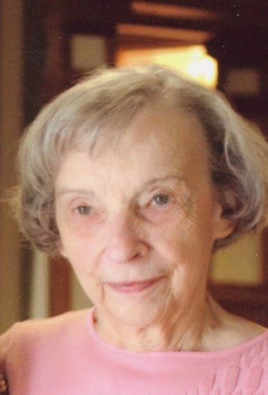

Wanda is the oldest relative that Mia remembers personally. She had 20 great-grandchildren and made excellent Walnut chocolate chip cookies. Her hotdogs always had trademarked sesame seed buns.
She worked as a secretarial pool for Grand Trunk Railroad, where she met her husband. After getting married she still worked part-time at a hospital as a typist, then working from home as a typist, then earning a high position at the Boy Scouts. Mia remembers her saying that she hated the ‘new’ electrical typewriters, since she typed too fast for them to keep up with her.
Wanda was a gifted and accomplished pianist, and excellent at Scrabble. However, she sometimes 'accidentally' claimed letter tiles were blank, so you had to be on guard when playing with her.